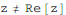

東京大学 2016年 理科 第4問
問題
zを複素数とする、複素数平面上の3点が鋭角三角形をなすようなzの範囲を求め、図示せよ。
解答
3点A,B,Cは三角形をなすから

だから、
-π/2<∠ABC<π/2だから、
-π/2<∠BCA<π/2だから、
よってΔABCが鋭角三角形となるzの範囲は
これを図示すると下図の塗りつぶし部(境界線は含まない)。
補足・感想
Reduce一発でやろうとしたが計算が終わらなかったため分割した。